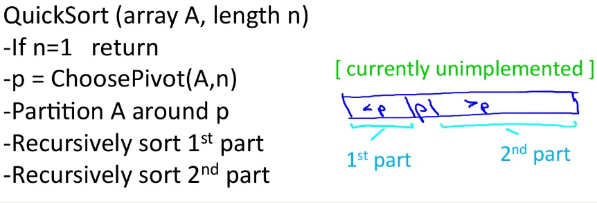
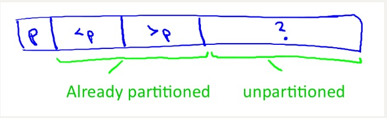
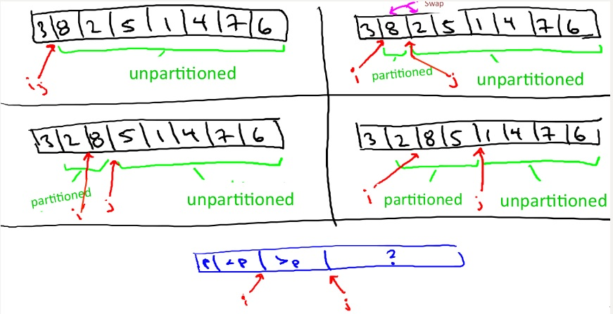

coursera上斯坦福的算法专项在讲到快速排序时，称其为最优雅的算法之一。快速排序确实是一种比较有效的排序算法，很多类库中也都采用了这种排序算法，其最坏时间复杂度为$O(n^2)$，平均时间复杂度为$O(nlogn)$，且其不需要额外的存储空间。
基本步骤
快速排序主要使用了分治的思想，通过选取一个pivot，将一个数组划分为两个子数组。其步骤为：
1.从数组中选择一个元素作为pivot
2.重新排列数组，小于pivot的在pivot的左边，大于pivot的在其右边。
3.递归地对划分后的左右两部分重复上述步骤。
简单的伪代码如下：

其中最主要的就是partition划分过程了。
划分过程
partition过程需要首先选择一个pivot，然后将小于pivot的元素放到左半部分，大于pivot的放到右半部分，并且最终pivot的位置及为其在排序好的数组中的最终位置。
这里使用第一个元素作为pivot，若选择其他元素作为pivot，则将其交换到第一个元素，这样可以保证代码的一致性及容易实现。示意图如下：

这里使用i和j，i和j最初为p+1的位置，在遍历的过程中i始终指向>p的第一个元素，j始终指向当前待遍历的元素，若a[j] < p，则将其与a[i]进行交换。相关过程如下:

基本实现如下：
1 | /** |
基本实现
1 | public class QuickSort { |
pivot的选取
根据斯坦福算法专项课，然我们实现三种不同的pivot选取方式，并计算相应比较次数，分别为choose first, choose last, median of three, 还可以进行随机选取，这也是快速排序为什么是一种随机化算法。
pivot的选取决定了快速排序的运行时间，下面对几种特殊情况进行分析：
1.最坏情况
假设我们始终选取第一个元素作为pivot, 并且输入数组是有序的，那么每次划分后面所有元素都大于pivot, 每次只能将问题规模减少１，所以运行时间为$n+n-1+n-2+…+1$ = $O(n^2)$.
2.最好情况
最好情况为每次选取的pivot都能将数组平均地划分为两部分，由于划分的过程为$O(n)$，所以总的运行时间为$$T(n) = 2T(n/2) + O(n)$$根据主方法，时间复杂度为O(nlogn)。
3.随机选取
每次运行过程中，随机选取pivot, 通常能得到比较好的结果。
选取方式及实现
斯坦福算法专项课上让我们实现三种不同的选取方式，选取第一个，最后一个，以及三数取中。
1.choose first
该种方式最为简单，只需返回子数组的第一个元素下标即可，下面为其实现：
1 | //返回pivot下标 选择第一个元素 |
2.choose last
选择最后一个元素，实现如下：
1 | //选择最后一个元素作为pivot |
3.median-of-three
选取第一个、最后一个以及中间的元素的中位数，如4 5 6 7, 第一个4, 最后一个7, 中间的为5, 这三个数的中位数为５, 所以选择5作为pivot，8 2 5 4 7, 三个元素分别为8 5 7, 中位数为7, 所以选择最后一个元素7作为pivot，其实现如下：
1 | //median-of-three pivot rule |
最后的划分过程如下：
1 | private static int partition(int[] a, int l, int r) { |
注意最后的划分过程相比于之前增加的pivot的选取方式，而不是单纯地将第一个元素作为pivot, 可以看到，若第一个元素不是pivot, 需要将pivot与第一个元素进行交换，这样保证代码的统一性。
总结与感想
1.学会体会这些算法背后的思想，为什么要这样设计
2.对于比较复杂的算法，学会使用特殊情况进行分析
参考资料:
(1) coursera斯坦福算法专项课part1
(2) 维基百科快速排序